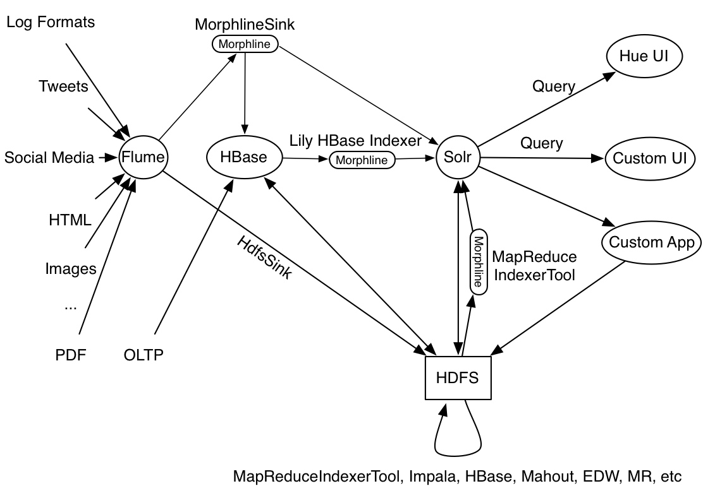

Morphlines Introduction
- Overview
- Usage in your Maven Project
- Syslog Use Case - Requirements
- Processing Model
- Data Model
- Usage Scenarios
- Embedding into a Host System
- Syntax
- Currently Available Commands
- Syslog Use Case - Solution
- Unit Tests
- Example Driver Program
- Performance
- Any Questions?
- Avro Use Case
Morphlines is an open source framework that reduces the time and efforts necessary to build and change Hadoop ETL stream processing applications that extract, transform and load data into Apache Solr, HBase, HDFS, Enterprise Data Warehouses, or Analytic Online Dashboards. Want to build or facilitate ETL jobs without programming and without substantial MapReduce effort? Get the job done with a minimum amount of fuss and support costs? Here is how to get started.
A morphline is a rich configuration file that makes it easy to define a transformation chain that consumes any kind of data from any kind of data source, processes the data and loads the results into a Hadoop component. It replaces Java programming with simple configuration steps, and correspondingly reduces the cost and integration effort associated with developing and maintaining custom ETL projects.
Morphlines is a library, embeddable in any Java codebase. A morphline is an in-memory container of transformation commands. Commands are plugins to a morphline that perform tasks such as loading, parsing, transforming, or otherwise processing a single record. A record is an in-memory data structure of name-value pairs with optional blob attachments or POJO attachments. The framework is extensible and integrates existing functionality and third party systems in a straightforward manner.
The morphline commands were developed as part of Cloudera Search. Morphlines power ETL data flows from Flume and MapReduce and HBase and Spark into Apache Solr. Flume and Spark cover the real time case, whereas MapReduce covers the batch processing case. Since the launch of Cloudera Search morphline development graduated into the Kite Software Development Kit (Kite SDK) in order to make the technology accessible to a wider range of users and products, beyond Search. The Kite SDK is a set of libraries, tools, examples, and documentation focused on making it easier to build systems on top of the Hadoop ecosystem. The Kite SDK is hosted on GitHub and encourages involvement by the community. For example, morphlines could be embedded into Crunch, HBase, Impala, Pig, Hive, or Sqoop. Let us know where you want to take it!
To pull in the minimum set of dependencies add the following dependency to the <dependencies> section of your pom.xml:
<dependency> <groupId>org.kitesdk</groupId> <artifactId>kite-morphlines-core</artifactId> <version>0.17.0</version> <!-- or whatever the latest version is --> </dependency>
Alternatively, to pull in the maximum set of dependencies (i.e. all available commands) add the following dependency to the <dependencies> section of your pom.xml:
<dependency> <groupId>org.kitesdk</groupId> <artifactId>kite-morphlines-all</artifactId> <version>0.17.0</version> <!-- or whatever the latest version is --> <type>pom</type> </dependency>
Let’s start with a concrete example use case: We want to extract information from a syslog file and index it into Apache Solr in order to make it available for Search queries. The corresponding program should be able to run standalone, or embedded inside a Flume Sink or embedded in a MapReduce job.
A syslog file contains semi-structured lines of the following form:
<164>Feb 4 10:46:14 syslog sshd[607]: listening on 0.0.0.0 port 22.
The program should extract the following record from the log line, convert the timestamp, and load the record into Solr:
priority : 164 timestamp : Feb 4 10:46:14 hostname : syslog program : sshd pid : 607 msg : listening on 0.0.0.0 port 22. message : <164>Feb 4 10:46:14 syslog sshd[607]: listening on 0.0.0.0 port 22.
These rules can be expressed with morphline commands by editing a morphlines.conf configuration file, as shown below.
Morphlines can be seen as an evolution of Unix pipelines where the data model is generalized to work with streams of generic records, including arbitrary binary payloads. A morphline is an efficient way to consume records (e.g. Flume events, HDFS files, Spark RDDs, RDBMS tables or Avro objects), turn them into a stream of records, and pipe the stream of records through a set of easily configurable transformations on the way to a target application such as Solr, for example as outlined in the following figure:

In this figure, a Flume Source receives syslog events and sends them to a Flume Morphline Sink, which converts each Flume event to a record and pipes it into a readLine command. The readLine command extracts the log line and pipes it into a grok command. The grok command uses regular expression pattern matching to extract some substrings of the line. It pipes the resulting structured record into the loadSolr command. Finally, the loadSolr command loads the record into Solr, typically a SolrCloud. In the process, raw data or semi-structured data is transformed into structured data according to application modelling requirements.
The Morphline framework ships with a set of frequently used high level transformation and I/O commands that can be combined in application specific ways. The plugin system allows the adding of new transformations and I/O commands and integrates existing functionality and third party systems in a straightforward manner.
This integration enables rapid Hadoop ETL application prototyping, complex stream and event processing in real time, flexible log file analysis, integration of multiple heterogeneous input schemas and file formats, as well as reuse of ETL logic building blocks across Hadoop ETL applications.
Kite ships an efficient runtime that compiles a morphline on the fly. The runtime executes all commands of a given morphline in the same thread. Piping a record from one command to another implies just a cheap Java method call. In particular, there are no queues, no handoffs among threads, no context switches and no serialization between commands, which minimizes performance overheads.
Morphlines manipulate continuous or arbitrarily large streams of records. A command transforms a record into zero or more records. The data model can be described as follows: A record is a set of named fields where each field has an ordered list of one or more values. A value can be any Java Object. That is, a record is essentially a hash table where each hash table entry contains a String key and a list of Java Objects as values. Note that a field can have multiple values and any two records need not use common field names. This flexible data model corresponds exactly to the characteristics of the Solr/Lucene data model.
Not only structured data, but also binary data can be passed into and processed by a morphline. By convention, a record can contain an optional field named _attachment_body, which can be a Java java.io.InputStream or Java byte[]. Optionally, such binary input data can be characterized in more detail by setting the fields named _attachment_mimetype (such as "application/pdf") and _attachment_charset (such as "UTF-8") and _attachment_name (such as "cars.pdf"), which assists in detecting and parsing the data type. This is similar to the way email works.
This generic data model is useful to support a wide range of applications. For example, the Apache Flume Morphline Solr Sink embeds the morphline library and executes a morphline to convert flume events into morphline records and load them into Solr. This sink fills the body of the Flume event into the _attachment_body field of the morphline record, as well as copies the headers of the Flume event into record fields of the same name. As another example, the Mappers of the CrunchIndexerTool and MapReduceIndexerTool fill the Java java.io.InputStream referring to the currently processed HDFS file into the _attachment_body field of the morphline record. The Mappers of the CrunchIndexerTool and MapReduceIndexerTool also fill metadata about the HDFS file into record fields, such as the file's name, path, size, last modified time, etc. This way a morphline can act on all data received from Flume and HDFS. As yet another example, the Morphline Lily HBase Indexer fills a HBase Result Java POJO into the _attachment_body field of the morphline record. This way morphline commands such as extractHBaseCells can extract data from HBase updates and correspondingly update a Solr index.
Commands can access all record fields. For example, commands can parse fields, add fields, remove fields, rename fields, find and replace values of existing fields, split a field into multiple fields, split a field into multiple values, or drop records. Often, regular expression based pattern matching is used as part of the process of acting on fields. The output records of a command are passed to the next command in the chain. A command has a Boolean return code, indicating success or failure.
For example, consider the case of a multi-line input record: A command could take this multi-line input record and divide the single record into multiple output records, one for each line. This output could then later be further divided using regular expression commands, splitting each single line record out into multiple fields in application specific ways.
A command can extract, clean, transform, join, integrate, enrich and decorate records in many other ways. For example, a command might join records with external data sources such as relational databases, key -value stores, local files or IP Geo lookup tables. It might also perform tasks such as DNS resolution, expand shortened URLs, fetch linked metadata from social networks, perform sentiment analysis and annotate the record accordingly, continuously maintain statistics for analytics over sliding windows, or compute exact or approximate distinct values and quantiles.
A command can also consume records and pass them to external systems. For example, a command might load records into Apache Solr or write them to a MapReduce Reducer, or load them into an Enterprise Data Warehouse or a Key Value store such as HBase, or pass them into an online dashboard, or write them to HDFS.
A morphline has no notion of persistence, durability, distributed computing, or node failover. A morphline is basically just a chain of in-memory transformations in the current thread. There is no need for a morphline to manage multiple processes, nodes, or threads because this is already addressed by host systems such as MapReduce, Flume, Spark or Storm. However, a morphline does support passing notifications on the control plane to command subtrees. Such notifications include BEGIN_TRANSACTION, COMMIT_TRANSACTION, ROLLBACK_TRANSACTION and SHUTDOWN.
The morphline configuration file is implemented using the HOCON format (Human Optimized Config Object Notation) developed by typesafe.com. HOCON is basically JSON slightly adjusted for the configuration file use case. HOCON syntax is defined at HOCON github page.
Kite includes several maven modules that contain morphline commands for flexible log file analysis, single-line records, multi-line records, CSV files, JSON, commonly used HDFS file formats Apache Avro and Apache Hadoop Sequence Files, regular expression based pattern matching and extraction, operations on record fields for assignment and comparison, operations on record fields with list and set semantics, if-then-else conditionals, string and timestamp conversions, scripting support for dynamic java code, a small rules engine, logging, metrics and counters, integration with Apache Solr including SolrCloud, integration and access to the large set of file formats supported by the Apache Tika parser library, commands for extracting and transforming XML and HTML with XPath, XQuery and XSLT, auto-detection of MIME types from binary data using Apache Tika, and decompression and unpacking of arbitrarily nested container file formats, among others. These are described in detail in the Morphlines Reference Guide.
This section provides a sample solution for the example requirements stated in the introduction of this page. It illustrates using a morphline to extract information from a syslog file and index it into Apache Solr. For example, this sample solution could run standalone, or embedded inside a Flume Sink or embedded inside a Mapper of a MapReduce job.
A syslog file contains semi-structured lines of the following form:
<164>Feb 4 10:46:14 syslog sshd[607]: listening on 0.0.0.0 port 22.
The program should extract the following record from the log line, convert the timestamp, and load the record into Solr:
priority : 164 timestamp : Feb 4 10:46:14 hostname : syslog program : sshd pid : 607 msg : listening on 0.0.0.0 port 22. message : <164>Feb 4 10:46:14 syslog sshd[607]: listening on 0.0.0.0 port 22.
These rules can be expressed with morphline commands called readLine, grok, convertTimestamp, sanitizeUnknownSolrFields, logInfo and loadSolr, by editing a morphlines.conf file to read as follows:
morphlines : [
{
# Name used to identify a morphline. E.g. used if there are multiple
# morphlines in a morphline config file
id : morphline1
# Import all morphline commands in these java packages and their
# subpackages. Other commands that may be present on the classpath are
# not visible to this morphline.
importCommands : ["org.kitesdk.**", "org.apache.solr.**"]
commands : [
{
# Parse input attachment and emit a record for each input line
readLine {
charset : UTF-8
}
}
{
grok {
# Consume the output record of the previous command and pipe another
# record downstream.
#
# A grok-dictionary is a config file that contains prefabricated
# regular expressions that can be referred to by name. grok patterns
# specify such a regex name, plus an optional output field name.
# The syntax is %{REGEX_NAME:OUTPUT_FIELD_NAME}
# The input line is expected in the "message" input field.
dictionaryFiles : [src/test/resources/grok-dictionaries]
expressions : {
message : """<%{POSINT:priority}>%{SYSLOGTIMESTAMP:timestamp} %{SYSLOGHOST:hostname} %{DATA:program}(?:\[%{POSINT:pid}\])?: %{GREEDYDATA:msg}"""
}
}
}
# Consume the output record of the previous command, convert
# the timestamp, and pipe another record downstream.
#
# convert timestamp field to native Solr timestamp format
# e.g. 2012-09-06T07:14:34Z to 2012-09-06T07:14:34.000Z
{
convertTimestamp {
field : timestamp
inputFormats : ["yyyy-MM-dd'T'HH:mm:ss'Z'", ""MMM d HH:mm:ss"]
inputTimezone : America/Los_Angeles
outputFormat : "yyyy-MM-dd'T'HH:mm:ss.SSS'Z'"
outputTimezone : UTC
}
}
# Consume the output record of the previous command, transform it
# and pipe the record downstream.
#
# This command deletes record fields that are unknown to Solr
# schema.xml. Recall that Solr throws an exception on any attempt to
# load a document that contains a field that isn't specified in
# schema.xml.
{
sanitizeUnknownSolrFields {
# Location from which to fetch Solr schema
solrLocator : {
collection : collection1 # Name of solr collection
zkHost : "127.0.0.1:2181/solr" # ZooKeeper ensemble
}
}
}
# log the record at INFO level to SLF4J
{ logInfo { format : "output record: {}", args : ["@{}"] } }
# load the record into a Solr server or MapReduce Reducer
{
loadSolr {
solrLocator : {
collection : collection1 # Name of solr collection
zkHost : "127.0.0.1:2181/solr" # ZooKeeper ensemble
}
}
}
]
}
]
For effective rapid and reliable iterative development of morphline config files and custom morphline commands we recommend adding unit tests to your projects. Here are the ingredients:
- A morphline config file, for example extractJsonPaths.conf
- Sample input data, for example complex.json
- A Java class that runs the morphline config file against the given input data and compares expected vs. actual output. If you like you can reuse the little Java unit test framework that ships with morphlines. Simply subclass AbstractMorphlineTest and use it along the lines of the existing morphline unit tests, such as MorphlineTest and JsonMorphlineTest. To pull in this unit test framework, add the following dependency to the <dependencies> section of your pom.xml:
<dependency> <groupId>org.kitesdk</groupId> <artifactId>kite-morphlines-core</artifactId> <type>test-jar</type> <scope>test</scope> <version>0.17.0</version> <!-- or whatever the latest version is --> </dependency>
To print diagnostic information such as the content of records as they pass through the morphline commands, consider enabling TRACE log level, for example by adding the following line to your log4j.properties file:
log4j.logger.org.kitesdk.morphline=TRACE
Putting it all together, you can download and run this working example Maven project that demonstrates how to unit test Morphline config files and custom Morphline commands.
This section provides a simple sample Java program that illustrates how to use the API to embed and execute a morphline in a host system (full source code).
/** Usage: java ... <morphlines.conf> <dataFile1> ... <dataFileN> */
public static void main(String[] args) {
// compile morphlines.conf file on the fly
File configFile = new File(args[0]);
MorphlineContext context = new MorphlineContext.Builder().build();
Command morphline = new Compiler().compile(configFile, null, context, null);
// process each input data file
Notifications.notifyBeginTransaction(morphline);
for (int i = 1; i < args.length; i++) {
InputStream in = new FileInputStream(new File(args[i]));
Record record = new Record();
record.put(Fields.ATTACHMENT_BODY, in);
morphline.process(record);
in.close();
}
Notifications.notifyCommitTransaction(morphline);
}
This code is, in essence, what production tools like CrunchIndexerTool, MapReduceIndexerTool, Apache Flume Morphline Solr Sink and Apache Flume MorphlineInterceptor and HBaseMapReduceIndexerTool are running as part of their operation, as outlined in the following figure:
All morphline commands are implemented efficiently. Ballpark-wise, a simple command like readJson or readAvro or grok can process O(100k) records per second per CPU core, and we've seen O(50k) simple xqueries/sec/core. A command that does almost nothing runs at something like O(5 M) records/sec/core - the overhead of passing records among commands is no more than a Java method invocation and hence close to zero - negligible. Considering that Lucene indexing inside Solr only runs at something like O(1k) records/sec/core ballpark this means that typically Lucene (rather than a morphline) is by far the main ingestion bottleneck (unless your morphline somehow samples or filters or otherwise throws away 99% of the records while running in a huge yet latency sensitive streaming MR or Impala job).
Finally, some Flume or HBase Near-Real-Time ingestion scenarios may require very high ingestion throughput, but in these cases load is spread across many machines and cores, rather than all happening on a single machine or single core, so again the performance of a morphline is very likely more than sufficient.
If you’ve got any questions, please do ask us. The best place is over on our mailing list.
More example morphline configuration files can be found in the unit tests.
A detailed description of all morphline commands can be found in the Morphlines Reference Guide.
The Kite SDK lives on GitHub where users can freely browse, download, fork, and contribute back to the source. Community contributions are not only welcome but strongly encouraged. Since most Java developers use tools such as Maven (or tools that are compatible with Maven repositories), artifacts are also available from the Cloudera Maven Repository for easy project integration.
This section provides a sample that illustrates using a morphline to index an Avro file with a given schema.
Let's view the content of a sample Avro file to understand the data:
$ wget http://archive.apache.org/dist/avro/avro-1.7.4/java/avro-tools-1.7.4.jar $ java -jar avro-tools-1.7.4.jar tojson kite-morphlines/kite-morphlines-core/src/test/resources/test-documents/sample-statuses-20120906-141433.avro
$ java -jar avro-tools-1.7.4.jar getschema kite-morphlines/kite-morphlines-core/src/test/resources/test-documents/sample-statuses-20120906-141433.avro
{
"type" : "record",
"name" : "Doc",
"doc" : "adoc",
"fields" : [ {
"name" : "id",
"type" : "string"
}, {
"name" : "user_statuses_count",
"type" : [ "int", "null" ]
}, {
"name" : "user_screen_name",
"type" : [ "string", "null" ]
}, {
"name" : "created_at",
"type" : [ "string", "null" ]
}, {
"name" : "text",
"type" : [ "string", "null" ]
}
...
]
}
We want to extract the fields named id, user_screen_name, created_at and text from the given Avro records, then store and index them in Solr, using the following Solr schema definition in schema.xml:
<fields> <field name="id" type="string" indexed="true" stored="true" required="true" multiValued="false" /> <field name="username" type="text_en" indexed="true" stored="true" /> <field name="created_at" type="tdate" indexed="true" stored="true" /> <field name="text" type="text_en" indexed="true" stored="true" /> <field name="_version_" type="long" indexed="true" stored="true"/> <dynamicField name="ignored_*" type="ignored"/> </fields>
Note that the Solr output schema omits some Avro input fields such as user_statuses_count. Suppose you want to rename the input field user_screen_name to the output field username. Also suppose that the time format for the created_at field is yyyyMM-dd'T'HH:mm:ss'Z'. Finally, suppose any unknown fields present are to be removed. Recall that Solr throws an exception on any attempt to load a document that contains a field that is not specified in schema.xml.
These transformation rules can be expressed with morphline commands called readAvroContainer, extractAvroPaths, convertTimestamp, sanitizeUnknownSolrFields and loadSolr, by editing a morphlines.conf file to read as follows:
# Specify server locations in a SOLR_LOCATOR variable; used later in
# variable substitutions:
SOLR_LOCATOR : {
# Name of solr collection
collection : collection1
# ZooKeeper ensemble
zkHost : "127.0.0.1:2181/solr"
}
# Specify an array of one or more morphlines, each of which defines an ETL
# transformation chain. A morphline consists of one or more (potentially
# nested) commands. A morphline is a way to consume records (e.g. Flume events,
# HDFS files or Spark RDDs), turn them into a stream of records, and pipe the stream
# of records through a set of easily configurable transformations on the way to
# a target application such as Solr.
morphlines : [
{
# Name used to identify a morphline. E.g. used if there are multiple
# morphlines in a morphline config file
id : morphline1
# Import all morphline commands in these java packages and their subpackages.
# Other commands that may be present on the classpath are not visible to this
# morphline.
importCommands : ["org.kitesdk.**", "org.apache.solr.**"]
commands : [
{
# Parse Avro container file and emit a record for each Avro object
readAvroContainer {
# Optionally, require the input to match one of these MIME types:
# supportedMimeTypes : [avro/binary]
# Optionally, use a custom Avro schema in JSON format inline:
# readerSchemaString : """<json can go here>"""
# Optionally, use a custom Avro schema file in JSON format:
# readerSchemaFile : /path/to/syslog.avsc
}
}
{
# Consume the output record of the previous command and pipe another
# record downstream.
#
# extractAvroPaths is a command that uses zero or more Avro path
# expressions to extract values from an Avro object. Each expression
# consists of a record output field name (on the left side of the
# colon ':') as well as zero or more path steps (on the right hand
# side), each path step separated by a '/' slash. Avro arrays are
# traversed with the '[]' notation.
#
# The result of a path expression is a list of objects, each of which
# is added to the given record output field.
#
# The path language supports all Avro concepts, including nested
# structures, records, arrays, maps, unions, etc, as well as a flatten
# option that collects the primitives in a subtree into a flat list.
extractAvroPaths {
flatten : false
paths : {
id : /id
username : /user_screen_name
created_at : /created_at
text : /text
}
}
}
# Consume the output record of the previous command and pipe another
# record downstream.
#
# convert timestamp field to native Solr timestamp format
# e.g. 2012-09-06T07:14:34Z to 2012-09-06T07:14:34.000Z
{
convertTimestamp {
field : created_at
inputFormats : ["yyyy-MM-dd'T'HH:mm:ss'Z'", "yyyy-MM-dd"]
inputTimezone : America/Los_Angeles
outputFormat : "yyyy-MM-dd'T'HH:mm:ss.SSS'Z'"
outputTimezone : UTC
}
}
# Consume the output record of the previous command and pipe another
# record downstream.
#
# Command that deletes record fields that are unknown to Solr
# schema.xml.
#
# Recall that Solr throws an exception on any attempt to load a document
# that contains a field that isn't specified in schema.xml.
{
sanitizeUnknownSolrFields {
# Location from which to fetch Solr schema
solrLocator : ${SOLR_LOCATOR}
}
}
# log the record at DEBUG level to SLF4J
{ logDebug { format : "output record: {}", args : ["@{}"] } }
# load the record into a Solr server or MapReduce Reducer
{
loadSolr {
solrLocator : ${SOLR_LOCATOR}
}
}
]
}
]